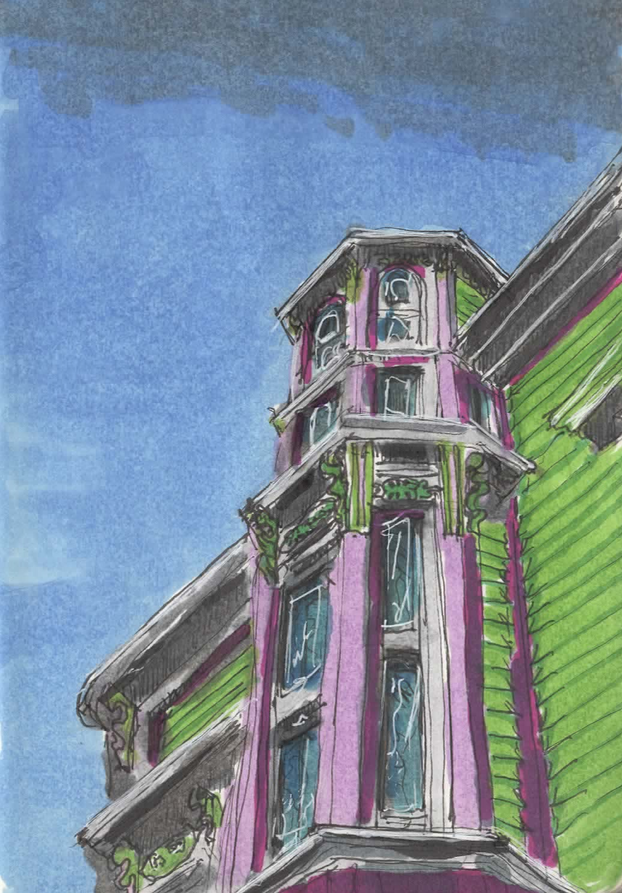

Lunenburg Events
Music, theatre, arts, and community — for the next two weeks.
Upcoming events in Lunenburg
Friday, September 4
5:00 PM
— First Fridays Art Walk — at Downtown Lunenburg
Saturday, September 5
7:00 PM
— Chris Garneau — at Old Confidence Lodge
Monday, September 7
2:00 PM
— Jack Pine; Tea & Scones Concert — at Old Confidence Lodge
Thursday, September 10
8:00 AM
— Lunenburg Farmers Market — at Lunenburg Community Centre
Saturday, September 12
7:00 PM
— Ska Sound System — at Old Confidence Lodge
Sunday, September 13
2:00 PM
— Fisher’s Memorial Service — at Fisheries Museum of the Atlantic
2:30 PM
— Banff Mountain Film Festival World Tour — at Old Confidence Lodge
Thursday, September 17
8:00 AM
— Lunenburg Farmers Market — at Lunenburg Community Centre
7:00 PM
— "Embracing Constraints" RAIC Public Lecture by Matthew Bishop and Lucas McDowell — at Lunenburg School of the Arts
Loading events…